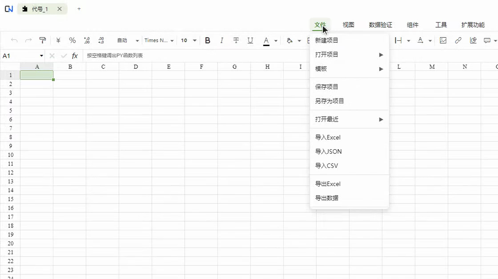
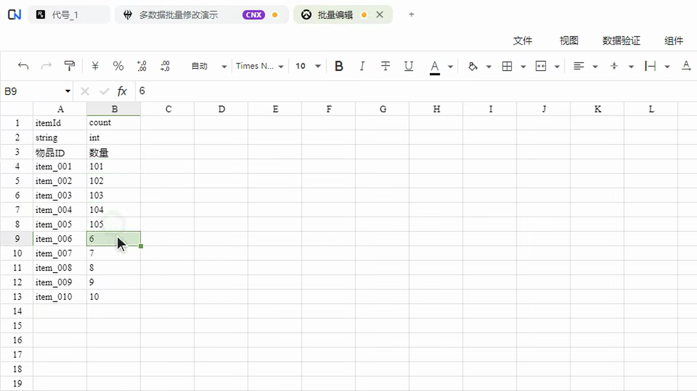
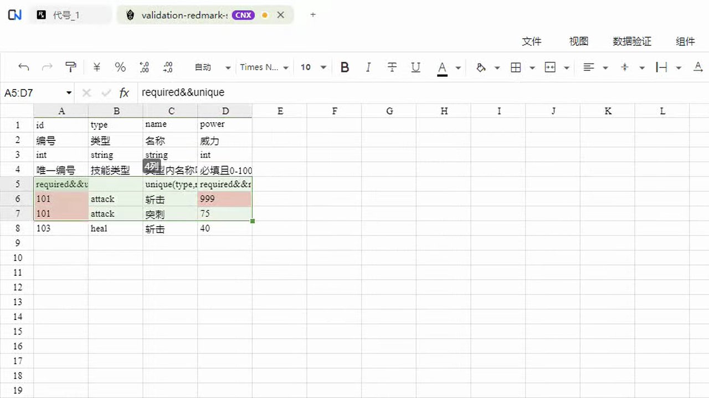
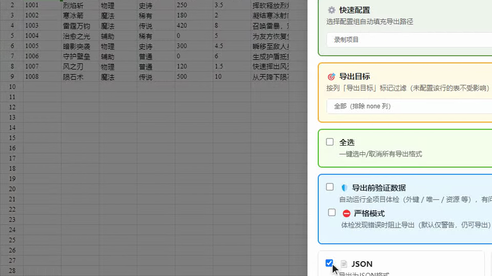
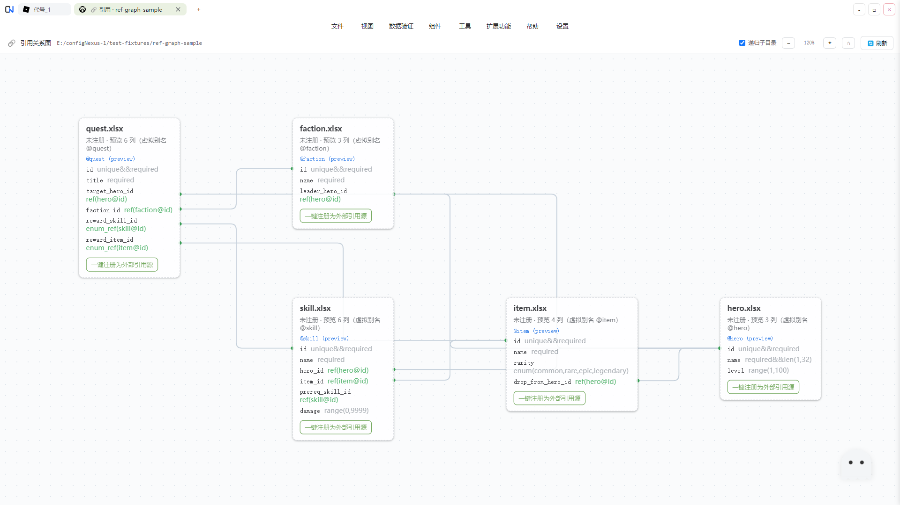
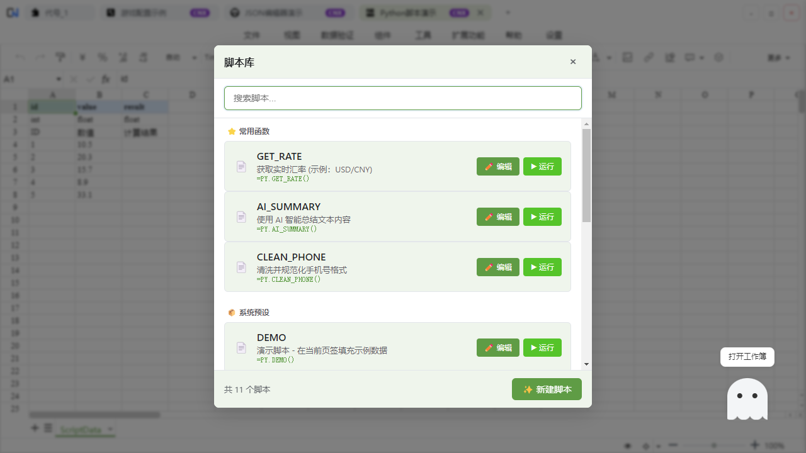

真实操作全程

导入 xlsx / xls / json / csv，用熟悉的表格方式编辑；字段类型、引用和规则即时检查，再导出 JSON、Protobuf、C# 等工程格式。
每一步都发生在真实产品里：保留原始数据结构，编辑时发现问题，按项目需要导出。




按需连接本地或远程模型，用自然语言完成内容生成、翻译和工作表操作；原有编辑、验证与导出流程保持不变。
生成配置内容和结构化表格，并直接创建为新工作表。
需要安装 AI Mod批量翻译多语言列、生成英文字段并按指定语气润色文本。
需要安装 AI Mod通过文字指令增删行列、填写区域、清空内容或调整格式。
需要安装 AI Mod
